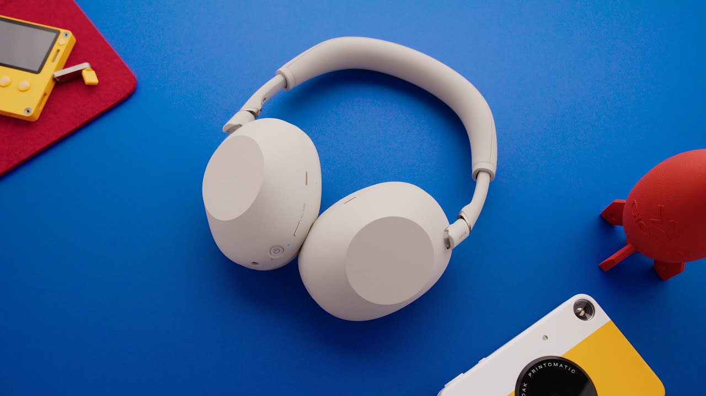

【索尼WH-1000XM6评测：重登王座！】
Summary: Sony's WH-1000XM6 headphones improve upon the Mark 5s with a new design, better sound, enhanced noise cancellation, and a more compact folding case, though at a higher price of $449.
摘要： 索尼WH-1000XM6耳机在Mark 5的基础上进行了改进，拥有新设计、更好的音质、更强的降噪功能以及更小巧的可折叠收纳盒，但价格也上涨至449美元。

⏱️ Estimated Reading Time: 16 min
(relaxed music) - 'Kay, so Sony is back with their new flagship wireless noise-canceling headphones with the super easy to remember name.
（轻松的音乐）好的，索尼带着他们的新款旗舰无线降噪耳机回来了，名字超级好记。
You know the ones.
就是那款。
These are the Sony WH-1000XM6s.
这就是索尼WH-1000XM6。
Easier way to think of it, most people just call these the XM6 or the Mark 6s, which is exciting because the Mark 5s from last year actually left some room for improvement.
更简单的叫法是XM6或Mark 6，这很令人兴奋，因为去年的Mark 5确实还有改进空间。
They improved some things, but they also made some things worse, which was weird because the Sony noise-canceling headphones were pretty much king of the hill for so long, they didn't have a ton of reason to change a whole lot.
它们改进了一些地方，但也有些地方退步了，这很奇怪，因为索尼降噪耳机长期以来一直是行业标杆，没有太多理由大幅改动。
Thankfully though, the newest generation updates a lot of the stuff that the Mark 5s fell short on, so that's really good to see.
不过值得庆幸的是，新一代产品改进了Mark 5的许多不足，这很棒。
It's exciting that there is a new design, new sound, a new case, but also a new price.
令人兴奋的是，它们有了新设计、新音效、新收纳盒，但也有了新价格。
We'll get there.
我们稍后会谈到。
So, straight from the top, I still love this super clean, simple design.
首先，我依然喜欢这种超级简洁的设计。
They kept what was good about the Mark 5s.
它们保留了Mark 5的优点。
They are very, very lightweight.
它们非常非常轻。
The vegan leather earpads are super soft.
素食皮革耳垫超级柔软。
The headband is incredibly flexible.
头带非常灵活。
These are just some of the most comfortable headphones to wear for a long period of time, which is what you want from these.
它们是长时间佩戴最舒适的耳机之一，而这正是你想要的。
If you wear them for a long time for traveling or for a commute or something like that, they are still awesome.
如果你在旅行或通勤时长时间佩戴，它们依然很棒。
But if you remember the last generation, maybe you're a subscriber and you've watched all these videos, wink, wink, then you remember that they made this huge downgrade to travel specifically because they didn't fold at all, ever, so they had this huge case that was more annoying to travel with.
但如果你记得上一代产品（也许你是订阅用户并看过这些视频，眨眼），你会记得它们在旅行方面有一个巨大的退步，因为它们完全不能折叠，所以配了一个超大收纳盒，旅行时很麻烦。
So, first thing I was happy to see is the Mark 6s are back to being able to fold up again, so they have a new, significantly smaller case designed around them that fits some cables as well, and bonus, the case doesn't zipper anymore.
所以，我高兴的第一点是Mark 6重新可以折叠了，因此它们有了一个全新的、小得多的收纳盒，还能放一些线材，而且收纳盒不再用拉链了。
It just closes with magnets at this buckle on the side and it is way faster to open and close than everyone else's zipper cases.
它只是通过侧面的磁扣闭合，开合速度比其他人的拉链收纳盒快得多。
I'm actually not sure how we haven't seen this more often because this case is pretty much perfect.
我其实不确定为什么这种设计不常见，因为这个收纳盒几乎完美。
I have a feeling it's about to be copied a whole lot in a whole bunch of places, 'cause wouldn't change a thing.
我感觉它很快会被大量模仿，因为它无可挑剔。
Also, another thing that Mark 5s weirdly didn't do was when you're wearing 'em around your neck was just to be able to rotate them flat like this.
另外，Mark 5奇怪地取消了一个功能，就是挂在脖子上时可以像这样平放。
For some reason, they took that away in the Mark 5s, and now they're back.
出于某种原因，Mark 5取消了这一点，现在又回来了。
Simple thing, but thank you.
虽然是小细节，但谢谢。
So, overall design-wise, I feel like these are back to being up near the top of the best travel-ready noise canceling headphones.
总的来说，设计方面，我感觉它们重新回到了最佳旅行降噪耳机的顶端。
It also comes with a four-foot right-angle headphone cable, and one of those tiny USB-C to USB-A cables for charging and they just fit in this little pocket over here in the corner of the case like this.
它还配有一条四英尺的直角耳机线，以及一条小小的USB-C转USB-A充电线，可以放在收纳盒角落的小口袋里。
It's great.
很棒。
Feels durable.
感觉很耐用。
No notes.
没有缺点。
And then they changed the buttons and microphones around the outside of the headphones just slightly, so the right side is still just the USB Type-C port, and then on the left next to the audio jack, they've made the power button much bigger, which doesn't seem like much of a big deal, but that now lets you distinguish better between the power button and the noise cancellation button while you're not able to see them.
然后他们稍微调整了耳机外侧的按钮和麦克风，右侧依然是USB Type-C接口，左侧音频插孔旁边的电源按钮变得更大，看起来没什么大不了，但现在你可以在看不见的情况下更好地区分电源按钮和降噪按钮。
Now, speaking of noise cancellation, they made a bunch of behind-the-scenes changes to these headphones that sound like they could make a big improvement.
说到降噪，他们对这些耳机做了一些幕后改进，听起来可能会有很大提升。
So, there are 12 microphones on these instead of eight from the last generation, there's also a significantly more powerful Sony QN3 chip inside that should be able to do much more processing, and they also said that they've trained these headphones on 500 million voice samples using AI to be able to better distinguish human voices from environmental noise.
所以，这些耳机有12个麦克风，而不是上一代的8个，内部还有一个更强大的索尼QN3芯片，应该能进行更多处理，他们还表示用AI训练了5亿个语音样本，以更好地区分人声和环境噪音。
So, this is the last generation of headphones and how the built in microphone sounds to someone I'm on a call with.
这是上一代耳机内置麦克风在通话中的表现。
Eight microphones.
八个麦克风。
You know, some noise from air conditioners and general room tones, but nothing too crazy.
有一些空调和房间背景噪音，但不算太糟。
And so now here is the Mark 6.
现在这是Mark 6的表现。
So, they added two more beamforming microphones to the front for hearing my voice better, but what I really think most of these microphones are better for is noise cancellation and transparency.
他们在前面增加了两个波束成形麦克风，以便更好地捕捉我的声音，但我认为这些麦克风更主要的作用是降噪和通透模式。
So, how do they sound?
那么，它们听起来如何？
Well, I've been listening to these headphones for the past two weeks or so.
过去两周左右我一直在用这些耳机。
I've taken a few flights, I've worn 'em around the studio, at home, all kinds of different environments, and they sound better.
我坐了几次飞机，在工作室、家里等各种环境中佩戴它们，音质更好。
These are actually all-new drivers versus the last gen, so there's a lot going on here, but to be specific, they are excellent quality sound with great range.
它们实际上采用了全新的驱动单元，所以有很多改进，具体来说，音质出色，音域宽广。
Punchy lows and a lot of bass and then a lot of detail and clarity all the way through the mids and the highs and they are still really, really insanely good at canceling out white noise.
低音强劲，中高音细节丰富、清晰，而且依然非常擅长消除白噪音。
Now, if we wanna get even more granular, I did a bunch of back-to-back listening with these Mark 6s and the last generation, and there are certain tracks where you really feel the difference a lot.
如果想更具体，我用Mark 6和上一代进行了大量对比试听，某些曲目中差异非常明显。
Basically, the Mark 6s have a much stronger low end, especially in the sub-bass and lowest bass, and the Mark 5s started to feel a little spiky in the midrange where the vocals are and were a little bit weaker in the low end, so in the tracks that have a really important bass or sub-bass, pop, electro, hip hop, stuff like that, that's when in these, they're really appreciated.
基本上，Mark 6的低音更强，尤其是超低音和最低频，而Mark 5的中频人声部分有些刺耳，低音稍弱，所以在那些低音或超低音很重要的曲目中，比如流行、电子、嘻哈等，这些改进非常明显。
And then the Mark 6 also has even stronger noise cancellation than the already GOATed Mark 5s, but the real highlight for me is actually the transparency mode, which feels way more natural and clear sounding.
而且Mark 6的降噪比已经很强的Mark 5更强，但对我来说真正的亮点是通透模式，听起来更自然清晰。
So, if you're wearing these headphones and do want voices to come through or just wanna hear your environment more for whatever reason, people might talk to you through these headphones, the transparency mode, or what Sony calls ambient sound mode, went from feeling a little muddy and unclear to literally up there with AirPods Max levels of crystal clear and natural, which is awesome.
所以，如果你戴着这些耳机并希望听到人声或环境音，通透模式（索尼称为环境声模式）从之前的有点浑浊不清晰，提升到了AirPods Max那种水晶般清晰自然的水平，很棒。
Now, not only are these headphones new, but Sony's also refreshed their app.
现在，不仅是耳机更新了，索尼还更新了他们的应用。
The Sony Headphones Connect app is now just called Sound Connect, but it still does most of the same stuff.
索尼Headphones Connect应用现在改名为Sound Connect，但功能基本不变。
There's still literally 20 different levels of ambient sound.
依然有20级环境声调节。
There's still custom EQs that you can easily flip between, and this is also where you can turn on or off any of the other convenience features.
依然有自定义EQ可以快速切换，也可以在这里开关其他便利功能。
Now, this one new one that I found interesting is listening mode.
现在，我发现一个有趣的新功能是聆听模式。
So, you can listen to your audio like normal in standard mode, or you can flip it to background music mode, which does an incredibly good job of making it sound like the music is coming from a small set of tinny speakers, like, 20 feet away, like, as if you're in a cafe somewhere, which, you know, you might be into that.
你可以在标准模式下正常听音乐，或者切换到背景音乐模式，它会非常逼真地模拟音乐来自远处的小扬声器，就像在咖啡馆里一样，你可能喜欢这种感觉。
There's even actually three modes.
实际上有三种模式。
So, cafe, living room, or my room, each of which just shrinks the size of the virtual room a bit, and then there's also cinema mode, which does this upmixing from stereo to a 360-degree immersive sound mix of whatever you're listening to, kinda like a movie theater.
咖啡馆、客厅或我的房间，每种模式都会缩小虚拟房间的大小，还有影院模式，可以将立体声上混为360度沉浸式音效，有点像电影院。
It's also a very dramatic V-shaped sound too.
也是一种非常夸张的V形音效。
I could picture someone maybe in their home office or a cubicle or something like that listening to these all day and wanting to feel like it's a less fatiguing, further away sound, and then you'd put cafe mode on and it works.
我能想象有人在家办公或小隔间里整天听音乐，希望声音不那么疲劳、更远一些，然后打开咖啡馆模式，效果很好。
It's surprising how well it works.
效果出奇地好。
And maybe then you flip to cinema mode for watching certain YouTube videos or something like that.
也许你还会切换到影院模式看某些YouTube视频之类的。
There's also still the EQ stuff.
还有EQ调节功能。
The point is you can make these headphones sound exactly the way you want them to.
重点是你可以让这些耳机听起来完全符合你的喜好。
The sound is really strong.
音质非常出色。
The noise cancellation is excellent.
降噪效果极佳。
They're extremely comfortable to wear for long periods of time.
长时间佩戴非常舒适。
They fold up into a smaller case.
可以折叠成更小的收纳盒。
The battery life is the same 30 hours as last year.
电池续航和去年一样是30小时。
My only downsides are literally that your ears can get a little sweaty without any ventilation after a couple hours and the touch pad controls on the side are still finicky like they are every year, but clearly these have a lot of great things going for them.
我唯一的缺点是戴几个小时后耳朵可能会有点闷热，侧面的触控板依然像往年一样不太灵敏，但显然它们有很多优点。
So then the price.
然后是价格。
$449.
449美元。
These are even more pricey now, and the Mark 5s were already super premium at 400 bucks when they launched, and now they've dropped down into the $350 range.
现在更贵了，Mark 5上市时已经是超高端价位400美元，现在降到了350美元左右。
These are launching at $450, maybe partially to account for tariffs, maybe partially because they think they're that much better now, but that is really expensive, and I was thinking about it for a while, and I actually still think they are worth it, and I basically landed on that because this whole category of all these other premium noise-canceling headphones options is filled with other things that still try to beat these and don't and make these still feel like a deal, if that makes sense.
这些以450美元的价格上市，可能部分是因为关税，也可能部分是因为他们认为现在产品更好，但这真的很贵，我考虑了一段时间，仍然认为它们物有所值，主要是因为其他高端降噪耳机依然无法超越它们，反而让这些耳机显得很划算。
Also, especially for Android people.
尤其是对安卓用户来说。
Like, the Bose QuietComfort Ultras are $429.
比如Bose QuietComfort Ultra售价429美元。
These are better.
这些更好。
The Sonos headphones launched at $450 and have dropped a little bit, but these are better.
Sonos耳机上市价450美元，现在降了一点，但这些更好。
JBL has a $400 option.
JBL有一款400美元的选项。
This absolutely smokes those.
这些完胜它们。
This smokes the Beat Studios.
完胜Beats Studio。
AirPods Max are still somehow $550.
AirPods Max依然要550美元。
You could argue though for the Apple ecosystem people that maybe that's worth it, but these Sonys still have multi-device connectivity and can combine an Apple device and a non-Apple device, which is sick.
你可以说对苹果生态用户来说可能值得，但这些索尼耳机依然有多设备连接功能，可以同时连接苹果和非苹果设备，这很棒。
So, my take is if you're still just looking for the flat out best headphones to fly with, to work with, to commute with, that you gotta have the most comfort, the best noise cancellation, I mean, that's just how much they cost.
所以我的观点是，如果你在寻找最适合飞行、工作、通勤的耳机，需要最舒适的佩戴感和最佳降噪效果，这就是它们的价格。
These are back on the throne.
它们重登王座。
So, there you have it.
就是这样。
Sony's WH-1000XM6.
索尼WH-1000XM6。
Thanks for watching.
感谢观看。
Catch you in the next one.
下期见。
Peace.
再见。